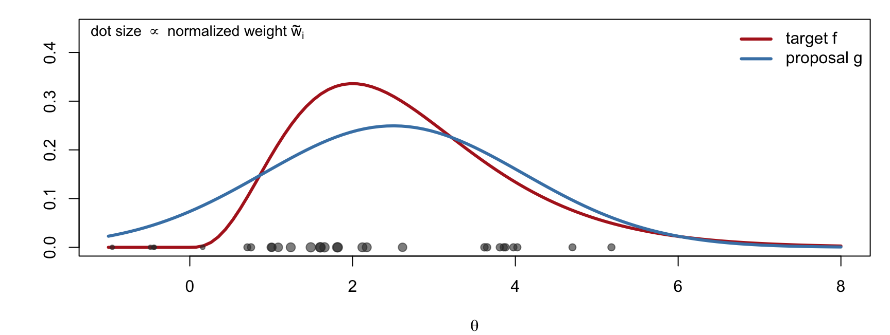
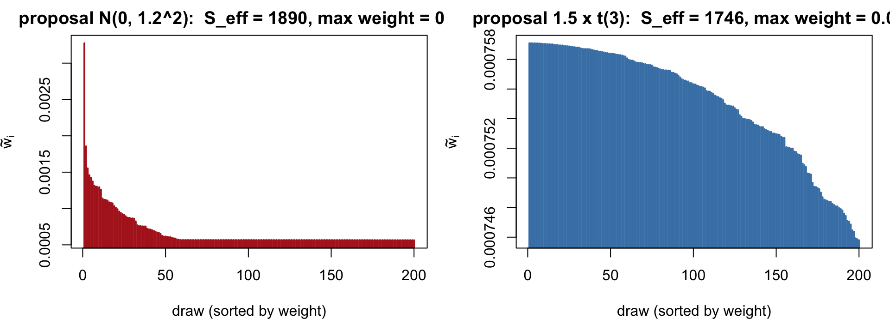
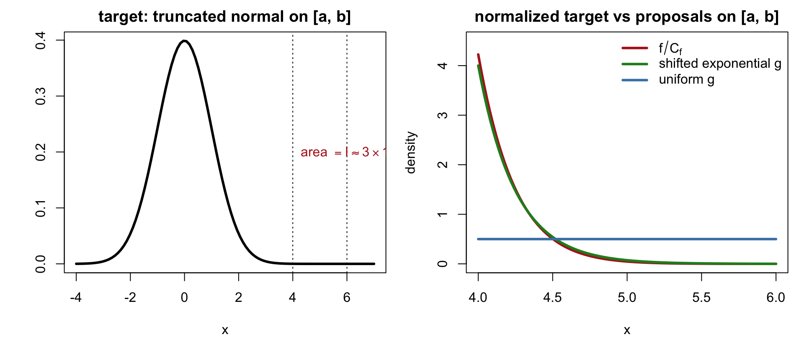
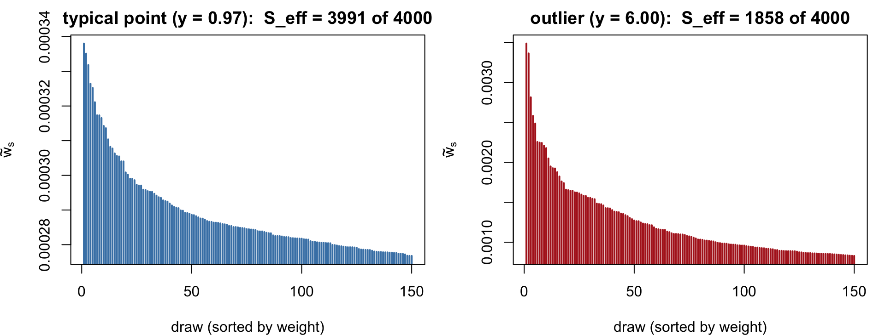

Two integrals with respect to an unnormalized function f(\theta), e.g. f(\theta) = \pi(\theta)P(x\mid\theta):
A posterior expectation A = \frac{\int a(\theta)\,f(\theta)\,d\theta}{\int f(\theta)\,d\theta} = E_f\big[a(\theta)\big], \qquad \theta\sim\frac{f(\theta)}{C_f}
The normalizing constant (marginal likelihood) C_f = \int f(\theta)\,d\theta
Plain Monte Carlo needs draws from f/C_f, which we cannot produce. Rejection sampling needs an envelope g\ge f, which may be hard to find or very wasteful.
The Idea: Reweighting
Reject, reweight, repeat. Instead of rejecting proposals, keep all of them and weight each by how much f favours it relative to the proposal.
Draw \theta\sim g(\theta)/C_g, where g is another (possibly unnormalized) function we can sample from
Attach the importance weightw(\theta) = \frac{f(\theta)}{g(\theta)}
Hope that w(\theta)\approx constant, i.e. g has roughly the shape of f
Requirement on g: wherever f is positive, g must be positive too, \{\theta: g(\theta)>0\}\ \supseteq\ \{\theta: f(\theta)>0\}
Otherwise part of f is never visited and the estimate is biased (Example 3).
2. The Importance Reweighting Formula
Derivation
Let C_g = \int g(\theta)\,d\theta. For any a,
\begin{aligned}
E_f\big[a(\theta)\big] &= \int a(\theta)\,\frac{f(\theta)}{C_f}\,d\theta
= \frac{C_g}{C_f}\int a(\theta)\,\frac{f(\theta)}{g(\theta)}\cdot\frac{g(\theta)}{C_g}\,d\theta \\[4pt]
&= \frac{C_g}{C_f}\,E_g\big[a(\theta)\,w(\theta)\big], \qquad w(\theta) = \frac{f(\theta)}{g(\theta)}
\end{aligned}
The division by g is legitimate only on \{g>0\}, hence the support requirement.
The normalized weights \tilde w_i turn the proposal sample into a weighted sample from f; unknown constants in f and g cancel.
Example: w = (100, 40, 60) gives \tilde w = (0.5, 0.2, 0.3).
Interpretation and Properties
\hat A is a weighted average of a(\theta_i): draws in regions where f\gg g count more, draws where f\ll g count less
\frac1n\sum_i w_i is unbiased for C_f/C_g; \hat A is a ratio of two averages, so it is biased with bias O(1/n) but consistent
Nothing is discarded, unlike rejection sampling; no envelope condition g\ge f is needed
Everything hinges on the variance of the weights: if w(\theta) varies wildly, a few draws dominate the sum

Effective Sample Size
How many “equally informative” draws is a weighted sample worth? S_{\text{eff}} = \frac{1}{\sum_{s=1}^S \tilde w(\theta_s)^2}, \qquad \tilde w(\theta_s) = \frac{w(\theta_s)}{\sum_{j=1}^S w(\theta_j)}
Special case: if w(\theta_s)\approx c for all s (proposal has the shape of the target), then \tilde w(\theta_s) = 1/S and S_{\text{eff}} = \frac{1}{\sum_{s=1}^S (1/S)^2} = \frac{1}{1/S} = S
At the other extreme, one dominant weight gives S_{\text{eff}}\approx1.
Variance heuristic. For iid draws from f, \text{Var}_f\big(\tfrac1S\sum_s a(\theta_s)\big) = \text{Var}_f(a)/S. For the importance estimator, \text{Var}_g\left(\frac{\sum_s a(\theta_s)w(\theta_s)}{\sum_s w(\theta_s)}\right)\ \approx\ \frac{\text{Var}_f\big(a(\theta)\big)}{S_{\text{eff}}}
We will see (Examples 2 and 3) that S_{\text{eff}} is computed only from the weights observed, and can look excellent when the estimate is wrong.
3. A Good Story
Example 1: Estimating a Normal Tail Probability
Estimate I = \int_a^b \varphi(x)\,dx = P(a<X<b), \qquad X\sim N(0,1)
and the conditional expectation E\big[a(X)\mid a<X<b\big]. Set the target to the truncated density f(x) = \varphi(x)\,I(a\le x\le b), \qquad C_f = \int_{-\infty}^{\infty}\varphi(x)\,I(a\le x\le b)\,dx = P(a<X<b)
so that E_f\big[a(x)\big] = \int_a^b a(x)\,\frac{\varphi(x)}{I}\,dx = E\big[a(X)\mid a<X<b\big]
For a far tail (a = 4), plain Monte Carlo from N(0,1) almost never lands in [a,b] (probability \approx 3\times10^{-5}), so both C_f and E_f[a] are hopeless without a proposal concentrated on [a,b].
Example 1 (Continued): Choice of Proposal
Any normalized g supported on [a,b] works, and then \frac1n\sum_i w_i estimates I directly:
Uniformg(x) = \dfrac{I(a\le x\le b)}{b-a}: \;w(x) = (b-a)\,\varphi(x), so \hat I = (b-a)\,\frac1n\sum_i\varphi(x_i), the Monte Carlo version of the midpoint rule
Shifted exponentialg(x) = \dfrac{\lambda e^{-\lambda(x-a)}}{1-e^{-\lambda(b-a)}}\,I(a\le x\le b) with \lambda\approx a: matches the decay of \varphi on the tail, so w is nearly constant and S_{\text{eff}}\approx n
The exponential proposal tracks the shape of the truncated normal; the uniform proposal wastes draws near b where \varphi is tiny, and its weights vary by a factor e^{(b^2-a^2)/2}\approx e^{10}.
Both are positive on all of \mathbb R, so the support requirement holds. But g concentrates around -5 and never produces draws near the second mode at +5.
For \theta near -5, w(\theta) = \frac{f(\theta)}{g(\theta)} = \tfrac12 + \tfrac12\,\frac{\varphi(\theta-5)}{\varphi(\theta+5)} = \tfrac12 + \tfrac12 e^{10\theta}\ \approx\ \tfrac12
so all observed weights are nearly equal: \tilde w_i\approx 1/S and S_{\text{eff}}\approx S. Yet
\widehat{C_f/C_g} = \frac1S\sum_i w_i \approx \tfrac12, while the truth is 1
\hat E_f(\theta) \approx -5, while the truth is 0
The draws that would reveal the error (those with w\approx \tfrac12 e^{10\theta}\gg1, near \theta = 5) have probability \approx \Phi(-10)\approx 10^{-23} under g: they never appear.
Example 2 (Continued)

Lesson: near-constant weights show only that g matches fwhere g has mass. They say nothing about regions g never visits. Use a proposal wide enough to cover all modes, or a mixture proposal, and compare results across different g.
Here \text{supp}(g)\subset\text{supp}(f): the proposal never visits (1,2]. True ratio: C_f/C_g = 2/1 = 2.
Draw \theta_s\sim g, i.e. \text{Unif}(0,1). For every draw, w(\theta_s) = f(\theta_s)/g(\theta_s) = 1, so \widehat{\frac{C_f}{C_g}} = \frac1S\sum_{s=1}^S w(\theta_s) = 1 \ \ne\ 2, \qquad S_{\text{eff}} = S
The estimate is wrong regardless of S, with perfect-looking weights. Example 2 is the smooth version of the same failure. The reverse situation (g wider than f) is harmless: draws outside \text{supp}(f) simply receive weight 0.
The Opposite Failure: Heavy-Tailed Weights
Examples 2 and 3 fail silently because g is too narrow. A g with lighter tails than f fails noisily: w = f/g is unbounded, \text{Var}_g(w) may be infinite, and a rare tail draw arrives with a huge weight.

Practical rules: give g tails at least as heavy as f (a t rather than a normal); centre and inflate g using a mode and Hessian (a Laplace approximation is a natural start); report S_{\text{eff}} and \max_i\tilde w_i; rerun with different g and distrust diverging answers.
5. Two Advanced Applications
Example 4: Free Energy and the Marginal Likelihood
In statistical physics, a system with energy U(x) at inverse temperature \beta has Z(\beta) = \int e^{-\beta U(x)}\,dx, \qquad F(\beta) = -\frac1\beta\log Z(\beta) \ \ (\text{free energy})
Importance sampling from \beta_0 to \beta_1 with g = e^{-\beta_0 U}, f = e^{-\beta_1 U}, w(x) = e^{-(\beta_1-\beta_0)U(x)}: \frac{Z(\beta_1)}{Z(\beta_0)} = E_{\beta_0}\Big[e^{-(\beta_1-\beta_0)U(x)}\Big]
Bayesian analogue. With U(\theta) = -\log L(\theta) and g = \pi(\theta) (prior, \beta_0 = 0), f = L(\theta)\pi(\theta) (posterior, \beta_1 = 1): P(y) = \frac{C_f}{C_g} = E_\pi\big[L(\theta)\big] \approx \frac1S\sum_{s=1}^S L(\theta_s), \qquad \theta_s\sim\pi
-\log P(y) is the free energy of the posterior. This “prior sampling” estimator is exactly Example 2 in disguise: the prior is diffuse, the likelihood is a narrow spike, weights are L(\theta_s), and almost all prior draws have negligible weight.
Example 4 (Continued): Prior Sampling Fails, Tempering Helps
y <-rnorm(30, 1, 1); n <-length(y) # data; model N(theta, 1), prior N(0, 10^2)logL <-function(th) sapply(th, function(t) sum(dnorm(y, t, log =TRUE)))s2p <-100; ybar <-mean(y) # exact log P(y): y ~ N(0, I + s2p * 11')exact <--n /2*log(2* pi) -0.5*sum((y - ybar)^2) -0.5*log(1+ n * s2p) -0.5* n * ybar^2/ (1+ n * s2p)S <-1e5; lse <-function(l) { M <-max(l); M +log(sum(exp(l - M))) }th <-rnorm(S, 0, 10); lw <-logL(th) # prior sampling: log weights = log Lc(exact = exact, prior_sampling =lse(lw) -log(S), S_eff =ess(exp(lw -max(lw))))
betas <-seq(0, 1, by =0.1); logZ <-0# stepping stones: chain of small stepsfor (k in2:length(betas)) { # draw from tempered posterior beta_{k-1} (conjugate here) b0 <- betas[k -1]; v <-1/ (1/ s2p + b0 * n); m <- v * b0 * n * ybar th <-rnorm(S, m, sqrt(v)); lw <- (betas[k] - b0) *logL(th) logZ <- logZ +lse(lw) -log(S) }c(exact = exact, stepping_stones = logZ)
exact stepping_stones
-45.66509 -45.66597
Each small temperature step has near-constant weights (a good story), and the log ratios add up: \log Z(1) - \log Z(0) = \sum_k \log\frac{Z(\beta_k)}{Z(\beta_{k-1})}.
Example 5: Bayesian Cross-Validation
Leave-one-out predictive density, the Bayesian analogue of cross-validation error: p(y_i\mid y_{-i}) = \int p(y_i\mid\theta)\,p(\theta\mid y_{-i})\,d\theta
Refitting the model n times is expensive. Instead, reuse draws \theta_s\sim p(\theta\mid y) from the full posterior as the proposal. The target is the leave-one-out posterior, f(\theta) = p(\theta\mid y_{-i}) \propto \frac{p(\theta\mid y)}{p(y_i\mid\theta)}, \qquad
w_i(\theta) = \frac{f(\theta)}{g(\theta)} = \frac{1}{p(y_i\mid\theta)}
the harmonic mean of p(y_i\mid\theta_s) over posterior draws (Gelfand, Dey & Chang, 1992).
Example 5 (Continued): When It Works and When It Breaks
The full posterior is narrower than the leave-one-out posterior (it has one more observation), so g has lighter tails than f: the heavy-tailed-weight failure
For a typical y_i the two posteriors nearly coincide and the weights are stable
For an influentialy_i (an outlier, a high-leverage point) the weights 1/p(y_i\mid\theta_s) have infinite variance and the estimate is dominated by a few draws
Diagnostics and fixes
Report S_{\text{eff}} per observation; a small value flags an influential point
Pareto-smoothed importance sampling (Vehtari, Gelman & Gabry, 2017): fit a generalized Pareto distribution to the largest weights, replace them by smoothed values, and use the estimated shape \hat k as a diagnostic (\hat k>0.7 unreliable)
Fall back to actual refitting for the flagged observations only
Example 5 (Continued)
Normal model, \theta\sim N(0,10^2), 30 observations plus one outlier at y = 6. Weight distributions for a typical point and for the outlier.

Summary
Importance sampling estimates E_f[a(\theta)] and C_f = \int f(\theta)\,d\theta from draws \theta_i\sim g using weights w_i = f(\theta_i)/g(\theta_i): \widehat{C_f/C_g} = \frac1n\sum_i w_i, \qquad \hat A = \sum_i a(\theta_i)\,\tilde w_i, \quad \tilde w_i = \frac{w_i}{\sum_j w_j}
Good story: a proposal shaped like the target on its support (Example 1) gives near-constant weights and S_{\text{eff}}\approx n
Bad stories: a proposal that misses a mode (Example 2) or part of the support (Example 3) fails silently, with perfect-looking weights; a proposal with lighter tails fails noisily, with a few huge weights
S_{\text{eff}} = 1/\sum_i\tilde w_i^2 diagnoses only the second kind of failure
Advanced uses: normalizing-constant ratios (free energy, marginal likelihood) via tempering steps; leave-one-out cross-validation from full-posterior draws with w_i = 1/p(y_i\mid\theta)